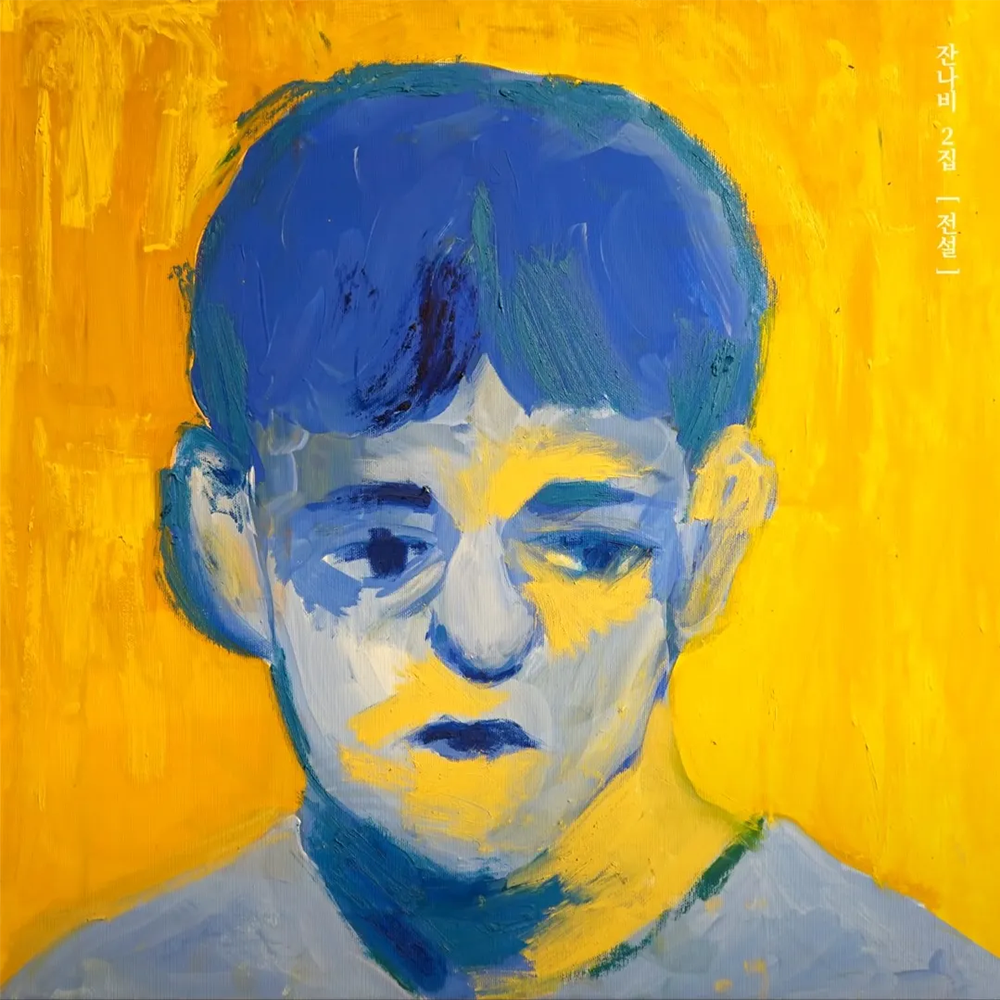

안녕하세요 라보엠입니다.
인디 록 밴드 잔나비의 주저하는 연인들을 위해는 2019년 3월 발매된 정규 2집 앨범 전설의 타이틀곡으로, 많은 이들의 마음을 울린 명곡입니다. 이 곡은 발매 직후 차트 상위권에 오르며 대중적인 인기를 얻었고, 멜론 월간 차트 1위를 기록하는 등 인디 밴드로서는 이례적인 성공을 한 곡입니다. 오늘은 잔나비의 뮤직비디오중 가장 인기있는 노래인 주저하는 연인들을 위해를 소개해드리겠습니다.

주저하는 연인들을 위해 뮤비
뮤직비디오는 한 커플의 이야기를 담고 있습니다. 인천 동구 배다리의 풍경을 배경으로, 아름다운 영상미를 선보입니다. 오래된 건물들과 거리의 모습이 노래의 감성과 잘 어울리죠. 이 뮤직비디오는 노래의 주제인 주저하는 연인들의 감정을 시각적으로 표현하며, 복고적인 분위기를 통해 노스탤지어를 자극합니다. 마지막에는 다른 남자와 걷는 여자와 남자주인공이 스쳐지나가며약간의 반전 요소를 가지고 있습니다. 이는 잔나비의 음악 스타일과 주저하는 연인들을 위해라는 곡의 메시지를 효과적으로 전달하고 있습니다. (주저하면 이렇게 된다.!?)
주저하는 연인들을 위해'는 사랑을 시작하기에 앞서 떠오르는 생각과 주저하는 마음을 표현하면서도, 그럼에도 사랑에 용기를 내보고 싶다는 감정을 담고 있습니다. 과거의 상처로 인해 새로운 사랑에 망설이는 이들에게 위로와 용기를 전하는 노래라고 할 수 있습니다.
잔나비 주저하는 연인들을 위해 노래 가사
1.
나는 읽기 쉬운 마음이야
당신도 스윽 훑고 가셔요
달랠 길 없는 외로운 마음 있지
머물다 가셔요 음
내게 긴 여운을 남겨줘요
사랑을 사랑을 해줘요
할 수 있다면 그럴 수만 있다면
새하얀 빛으로 그댈 비춰 줄게요
그러다 밤이 찾아오면
우리 둘만의 비밀을 새겨요
추억할 그 밤 위에 갈피를 꽂고 선
남몰래 펼쳐보아요
2.
나의 자라나는 마음을
못 본채 꺾어 버릴 순 없네
미련 남길바엔 그리워 아픈 게 나아
서둘러 안겨본 그 품은 따스할 테니
그러다 밤이 찾아오면
우리 둘만의 비밀을 새겨요
추억할 그 밤 위에 갈피를 꽂고 선
남몰래 펼쳐보아요
언젠가 또 그날이 온대도
우린 서둘러 뒤돌지 말아요
마주보던 그대로 뒷걸음치면서
서로의 안녕을 보아요
피고 지는 마음을 알아요
다시 돌아온 계절도
난 한 동안 새 활짝 피었다 질래
또 한번 영원히
그럼에도 내 사랑은 또 같은 꿈을 꾸고
그럼에도 꾸던 꿈을 난 또 미루진 않을거야
이 곡의 가사는 마치 한 편의 시와 같은 아름다움을 지니고 있습니다.
"나는 읽기 쉬운 마음이야 / 당신도 스윽 훑고 가셔요"
첫 구절부터 화자의 마음을 책에 비유하며, 쉽게 다가왔다 떠나는 관계에 대한 아픔을 표현합니다.
"그러다 밤이 찾아오면 / 우리 둘만의 비밀을 새겨요"
이 부분은 사랑하는 이와의 특별한 순간을 아름답게 표현하고 있습니다. 밤이라는 시간을 통해 둘만의 은밀하고 소중한 추억을 만들어가는 모습을 그리고 있습니다.
"미련 남길 바엔 그리워 아픈 게 나아 / 서둘러 안겨본 그 품은 따스할 테니"
이 구절은 사랑에 대한 용기와 결단을 보여줍니다. 주저하다 놓치는 것보다는 사랑에 뛰어들어 경험해보는 것이 낫다는 메시지를 전합니다.
노래의 특징
주저하는 연인들을 위해는 잔잔한 선율과 레트로한 감성이 어우러진 곡입니다. 보컬 최정훈의 감성적인 목소리와 밴드의 섬세한 연주가 조화를 이루며, 특히 트럼펫 소리가 곡의 분위기를 한층 더 높여줍니다.
이 노래는 많은 이들의 공감을 얻으며 큰 사랑을 받았습니다. 특히 청춘들의 복잡한 감정을 잘 표현했다는 평가를 받았고, 한국대중음악상에서 '올해의 노래' 부문을 수상하는 등 음악성도 인정받았습니다.
맺음말
잔나비의 주저하는 연인들을 위해는 사랑에 대한 두려움과 용기, 그리움과 아픔을 섬세하게 담아낸 노래입니다. 과거의 상처로 인해 새로운 사랑을 시작하기 망설이는 이들에게 따뜻한 위로와 용기를 전하는 이 곡은, 많은 이들의 마음속에 오래도록 남을 명곡이 되었습니다. 사랑이란 감정에 주저하고 있다면, 혹은 과거의 아픔 때문에 새로운 사랑을 시작하기 두렵다면 이 노래를 들어보세요. 잔나비의 주저하는 연인들을 위해가 여러분에게 작은 위로와 용기가 되어줄 것입니다. 때로는 미련을 남기는 것보다 사랑에 뛰어드는 것이 더 값진 경험이 될 수 있을거에요. 이 세상의 모든 연인들을 응원합니다. 러브 앤 피스